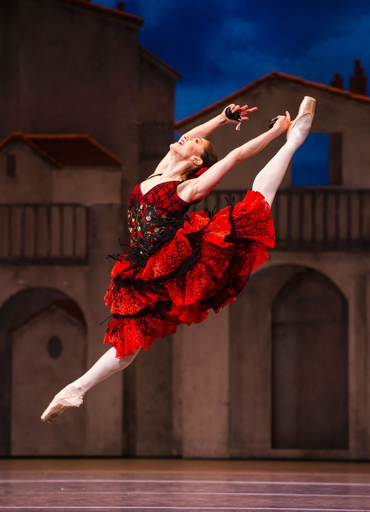
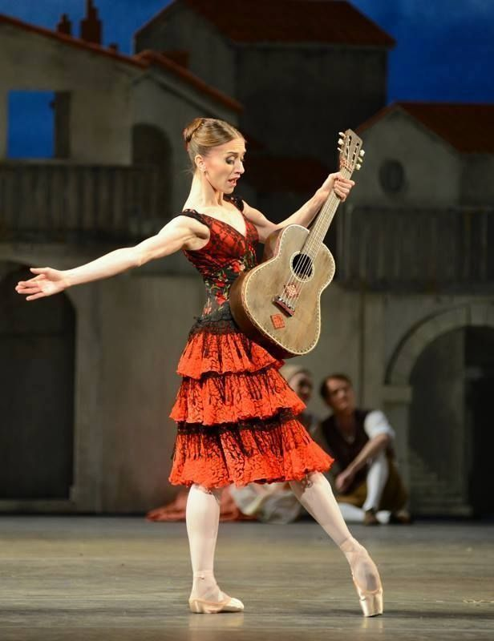
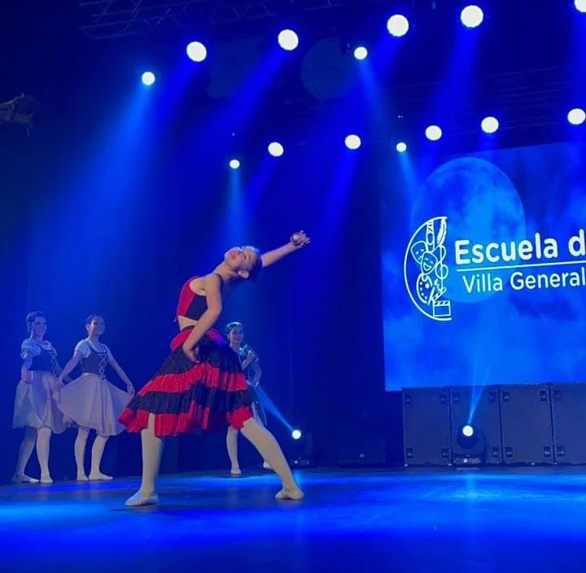

Trama de la Obra
El ballet Don Quijote cuenta la historia de amor entre Kitri y Basilio, un barbero, en el contexto de las aventuras del caballero Don Quijote y su fiel escudero Sancho Panza. En el primer acto, Don Quijote, al confundir a Kitri con su amada Dulcinea, ayuda a la pareja a escapar de los intentos de su padre, Lorenzo, quien quiere casarla con un hombre rico pero ridículo, Gamache. En el segundo acto, Don Quijote vive una serie de alucinaciones, creyendo luchar contra gigantes, mientras Kitri y Basilio encuentran refugio en una fiesta gitana. En el tercer acto, Kitri es forzada a comprometerse con Gamache, pero Basilio finge suicidarse, lo que lleva a una reconciliación. Al final, Kitri y Basilio se casan, y Don Quijote y Sancho continúan su búsqueda de aventuras. La obra celebra el amor, la valentía y la imaginación, con una vibrante coreografía llena de energía.



